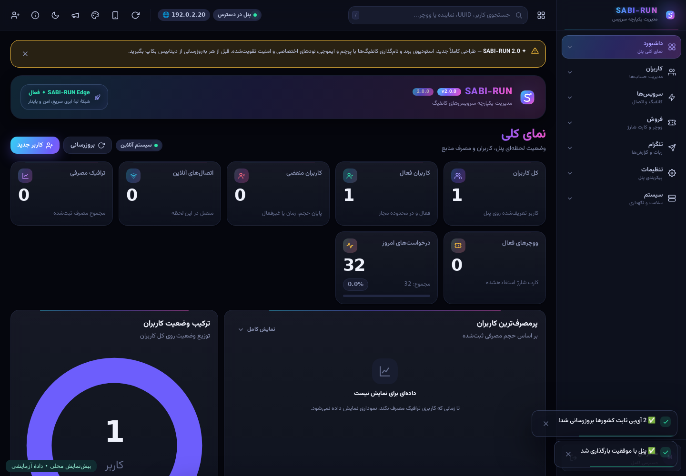

استودیوی برند
نام برند، قالب کانفیگ، لینکهای پشتیبانی و هفت پوستهٔ رنگی؛ با پیشنمایش زنده.
SABI-RUN؛ پنل فارسی مدیریت اشتراک با طراحی Nebula، استودیوی شخصیسازی و استقرار روی Cloudflare Pages.
نسخهٔ پیشنمایش ۲.۰ • متنباز در دسترس • بدون توکن پنهان
پروژهٔ نمونه پس از اولین انتشار، هنگام انتشار مجدد با کد 8000119 متوقف شد. سرویس نصب آنلاین راهاندازی نشده است. پیش از نصب، محدودیت را از طریق پشتیبانی کلادفلر رفع کنید؛ ساخت پروژهٔ جایگزین برای دورزدن آن توصیه نمیشود.
نام برند، قالب کانفیگ، لینکهای پشتیبانی و هفت پوستهٔ رنگی؛ با پیشنمایش زنده.
پرچم، نام کشور، ایموجی، شماره و نام کاربر. کشور بر اساس برچسب نود است؛ تضمین کشور خروجی نیست.
🇩🇪 آلمان │ 🚀 SABI-RUN │ sabiاحراز هویت APIها، نشست نمکدار و قابل ابطال، کنترل دسترسی نماینده و محافظت وبهوک تلگرام.

ورود، ساخت کاربر، اشتراک، کنترل دسترسی، استودیو و موبایل بررسی شدهاند. اتصال واقعی VLESS و نصب سرتاسری این نسخه هنوز تأیید نشدهاند.
لینک، مجوزهای Account Settings Read، D1 Edit و Pages Edit را پیشنهاد میکند. حساب، دامنهٔ دسترسی و تاریخ انقضا را خودتان در کلادفلر بررسی و تأیید کنید. وبسایت نمیتواند این تأیید یا دریافت توکن را از طرف شما انجام دهد.
ساخت توکن در کلادفلر ↗در حال حاضر نصب محلی آماده است: سورس را دانلود کنید و فرمان زیر را اجرا کنید. توکن و رمز در ترمینال مخفی دریافت میشوند و فقط به API کلادفلر فرستاده میشوند.
python3 installer/install.pyنصبکننده ابتدا رمز شما و دیتابیس را میسازد؛ سپس پروژه و تنظیمات Pages را ایجاد میکند. بعد از نصب توکن موقت را لغو کنید. اگر محدودیت 8000119 دیدید، نصب متوقف میشود.